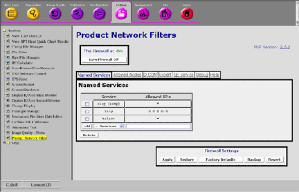
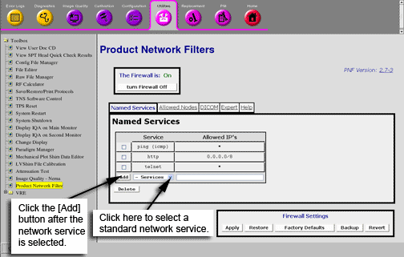
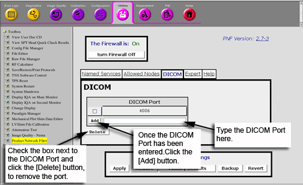
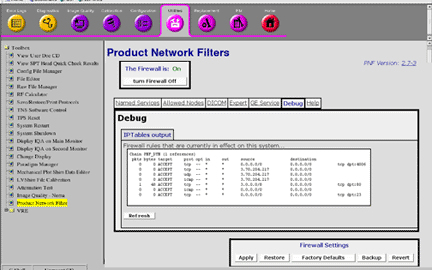
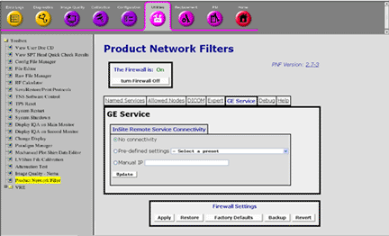

GE Exclusive Use Only
Direction 5670000, Rev# 1
Optima MR450w 1.5T Service Methods
Module Version 3.0, Version Date 8/19/08
GE Exclusive Use Only |
Product Network Filters (PNF) is a software firewall tool which allows a site Network Administrator to control traffic from the site's internal network to the Diagnostic Imaging System. This tool was created in response to the customer's need for security.
This tool is accessible from the Common Service Desktop (CSD.)
Illustration 1: Main PNF Screen

The PNF offers a feature for GE use ONLY with the Insite connectivity configuration. The default value only allows the connection of the GE Healthcare Online Center (OLC) back office.
| NOTE: | Some customers have custom infrastructures and will want to change the IP address from where the service communication comes from. In this situation, we need to know from the customer these new addresses and configure them in the GE Service tab of PNF for remote service to work properly. The OLC connectivity team should be consulted in these situations. |
| ||||
| ALL settings made in the PNF Tool are saved in the system save data. If a load from cold should need to be performed, the PNF settings will be restored during the system restore. | ||||
| ||||
| The Firewall should be ON at all times, this is the default setting. If issues are found because of the Firewall, contact the OLC connectivity team to resolve issues. It is not acceptable to leave the firewall OFF. | ||||
The Firewall can be turned ON and OFF by clicking the buttons in Illustration 2. In order for the system to recognize changes, click the [Apply ] button.
Illustration 2: Firewall State Buttons

The Firewall Settings buttons are common across all tabs in the PNF tool. See Illustration 3. These buttons can be clicked at any time and in any tab. The function of that button will be applied by the tool at the current state of ALL tabs.
Illustration 3: Firewall Settings Buttons

The PNF Tool saves the current filter settings (from all Tabs). If the firewall is currently "On", the application will restart the firewall with these new settings. The [Apply] button appears flat & grayed out when PNF detects that the current GUI settings are the same as those last applied.
The PNF Tool changes the GUI filter settings to those last saved with the [Backup] button. If the firewall is currently "On", the application will restart the firewall with these new settings.
The [Factory Defaults] button will reset the PNF configuration defaults. If the firewall is currently "On", the application will restart the firewall with these new settings.
The PNF Tool saves a copy of the filtering rules that were last applied via the [Apply] button. The firewall is not restarted.
The PNF Tool changes the GUI filter settings to those last made when the [Apply] button was clicked. The firewall is not restarted. The [Revert] button appears flat & grayed out when PNF detects that the current GUI settings are the same as those last applied.
There are two modes (customer and GE service). In the service mode, the user can see all of the customer tabs as well.
The Named Services Tab, is the screen where the site's network administrator selects a standard networking service to open to this system from the site's network. See Illustration 4.
Illustration 4: Named Services Tab

Adding a Network Service
To add a network service, click the drop-down menu labeled Services.
Standard Networking Services offered are:
telnet
ssh
ftp
rexec
rlogin
rsh
http
https
tftp
ldap
ssl/tls
ntp
portmap
ping
Select a network service from the drop-down menu.
An IP address can be entered in the Allowed IP's field or the field can be left blank.
IP addresses allow the user to create rules where network communication is only accepted from a predetermined host or set of hosts. Below is a list of acceptable ways to populate the IP fields. The default value for IP fields is all IP addresses.
w.x.y.z = single IP address (ex: 1.2.34.5)
w.x.y.z/a.b.c.d = subnet with netmask (ex: 1.2.0.0/255.255.0.0)
w.x.y.z/a = subnet with byte netmask, this is the same as the previous subnet but specifying the netmask as a single byte (ex: 1.2.0.0/16)
w.x.y.a - w.x.y.b = IP range, all hosts between two end points (ex: 1.2.34.5 - 1.2.34.10)
Click [Add]. This service is now added to the list. If the Allowed IP's field was left blank an * will appear.
Removing a Network Service
Check the box next to the Node IP on the list.
Click the [Delete] button.
The Allowed Nodes tab opens all network services to a specific IP address. See Illustration 5.
Illustration 5: Allowed Nodes

Adding an Allowed Node
Enter the IP address in the Node IP field.
IP addresses allow the user to create rules where network communication is only accepted from a predetermined host or set of hosts. Below is a list of acceptable ways to populate the IP fields. The default value for IP fields is all IP addresses.
w.x.y.z = single IP address (ex: 1.2.34.5)
w.x.y.z/a.b.c.d = subnet with netmask (ex: 1.2.0.0/255.255.0.0)
w.x.y.z/a = subnet with byte netmask, this is the same as the previous subnet but specifying the netmask as a single byte (ex: 1.2.0.0/16)
w.x.y.a - w.x.y.b = IP range, all hosts between two end points (ex: 1.2.34.5 - 1.2.34.10)
Once the IP address has been entered, click [Add] so the IP Address will be added to the list.
Once all Nodes have been added, click the [Apply ] button to make changes to the PNF configuration.
Removing an Allowed Node
Check the box next to the Node IP in the list.
Click the [Delete] button to remove the Node IP from the list.
Once all changes have been made, click the [Apply] button to make changes to the PNF configuration.
This screen may be used to verify that the correct DICOM port was populated during installation. This field should be auto-populated during the initial set-up of the DICOM ports. Also additional DICOM ports can be added. See Illustration 6.
Illustration 6: DICOM Tab

Adding a DICOM Port
Enter the DICOM Port in the field next to the[Add] button.
Click the [Add] button so the new DICOM Port is in the list.
Once all DICOM Ports have been added, click the [Apply ] button to make changes to the PNF configuration.
Removing a DICOM Port
Check the box next to the DICOM Port in the list.
Click the [Delete] button to remove the DICOM Port from the list.
Once all changes have been made, click the [Apply] to make changes to the PNF configuration.
The Expert Tab allows a more flexible method for the network administrator to create rules. Any input to this tab will require networking expertise, please work with the site's network administrator when working in this tab.
This tab is also used to view all of the application rules that have been created. See Illustration 7.
Illustration 7: Expert Tab

Creating a Rule
To create a rule for the firewall, enter the application name in the Name field.
Enter the Port info in the Port field.
Click on the Protocol drop-down menu for the rule to be applied.
If needed, enter the IP address that this rule will be applied.
IP addresses allow the user to create rules where network communication is only accepted from a predetermined host or set of hosts. Below is a list of acceptable ways to populate the IP fields. The default value for IP fields is all IP addresses.
w.x.y.z = single IP address (ex: 1.2.34.5)
w.x.y.z/a.b.c.d = subnet with netmask (ex: 1.2.0.0/255.255.0.0)
w.x.y.z/a = subnet with byte netmask, this is the same as the previous subnet but specifying the netmask as a single byte (ex: 1.2.0.0/16)
w.x.y.a - w.x.y.b = IP range, all hosts between two end points (ex: 1.2.34.5 - 1.2.34.10)
Once all fields have been populated, click the [Add] button. The rules created will now be added to the list.
Once all rules have been made, click the [Apply] to make changes to the PNF configuration.
Removing a Rule
Check the box next to the Name in the list.
Click the [Delete] button to remove the rule from the list.
Once all changes have been made, click the [Apply] to make changes to the PNF configuration.
The Debug Tab is only visible when the GE Healthcare Service Key is in the system. When the firewall is On, the Debug Tab displays a list of all firewall rules applied to this system. See Illustration 8.
When the firewall is Off, the inner most box will display the phrase:
Firewall is off (all traffic allowed)
Illustration 8: Debug Tab

The GE Service Tab displays the IP address for the connection of remote service. The ONLY time this address would be changed is if the site is using a non-standard VPN administrator. IF this is the case, obtain the correct IP address from the site network administrator. Contact the OLC Connectivity team to properly establish the link. See Illustration 9.
The PNF offers a feature for GE use ONLY with the Insite connectivity configuration. The default value only allows the connection of the GE Healthcare Online Center (OLC) back office.
Illustration 9: GE Service Tab

Troubleshooting the firewall can be done by turning the Firewall ON and OFF. See Illustration 10.
Illustration 10: Firewall State Button
The Firewall can be turned ON and OFF by clicking the [turn Firewall Off] or [turn Firewall On] buttons.
| ||||
| The Firewall should be ON at all times, this is the default setting. If issues are found because of the Firewall, contact the OLC connectivity team to resolve issues. It is not acceptable to leave the firewall OFF. | ||||
Once all the necessary changes/settings have been made, perform the following steps:
At the Firewall Setting buttons, click [Apply]. See Illustration 11.
This will apply the changes to the PNF configuration.
In order to store this configuration in the system data, click the [Backup] button. See Illustration 11. If a load from cold should need to be performed, the PNF configuration settings will be restored from the SaveInfo media.
Illustration 11: Firewall Setting Buttons